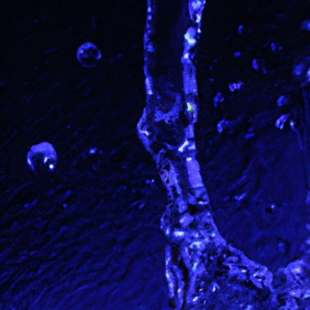

Hydrological Cycle
Hydrological Cycle
Evaporation and transpiration
Condensation and cloud formation
Precipitation and rain patterns
Surface runoff and river systems
Groundwater flow and aquifers
Snowmelt and glacial processes
Water storage in oceans lakes and reservoirs
Soil moisture and infiltration
Water balance and budgeting
Human impact on the hydrological cycle
Marine Ecosystems
Marine Ecosystems
Coral reefs and their biodiversity
Mangrove forests as coastal protectors
Ocean currents and climate regulation
Deepsea habitats and extremophiles
Intertidal zones and estuarine ecosystems
Marine food webs and trophic levels
Freshwater Ecosystems
Freshwater Ecosystems
Conservation efforts for marine species
Marine biogeochemical cycles
Impact of global warming on oceans
Water Resource Management
Water Resource Management
Rivers streams and creeks ecosystems
Lakes ponds wetlands habitats
Biodiversity in freshwater environments
Aquatic plants role in oxygenation
Freshwater fish species diversity
Invasive species impact on freshwater systems
Pollution threats to freshwater sources
Conservation strategies for freshwater biomes
Role of wetlands in flood control
Importance of riparian buffers
Cultural Significance of Water
Cultural Significance of Water
Sustainable water use practices
Desalination technologies for fresh water supply
Wastewater treatment processes
Rainwater harvesting techniques
Management of water during drought conditions
Transboundary water resource politics
Infrastructure for water distribution
Agricultural irrigation efficiency
Urban water demand management
Impact of climate change on water resources
About Us
Contact Us
Human impact on the hydrological cycle
Water Scarcity
Human interactions with the environment, specifically through alterations to land and water use, exert a profound influence on the hydrological cycle—the continuous movement of water on, above, and below the surface of the Earth. These modifications can alter how water evaporates from surfaces, condenses in the atmosphere, precipitates back to the ground, infiltrates soil, and runs off into rivers and oceans.
Urbanization serves as a prime example. As cities expand with impermeable surfaces like concrete and asphalt replacing natural landscapes, there is less land available for rainwater to soak into. Consequently, this leads to increased runoff which can contribute to flash floods due to insufficient absorption by soil or groundwater storage. Moreover, urban areas often redirect water through sewage systems and storm drains that hasten its journey back to seas without allowing it to replenish local aquifers—a process vital for sustaining regional water supplies.
Agriculture also significantly impacts the hydrological cycle.
Hydration and Health
Intensive farming practices require substantial irrigation which draws heavily from rivers or underground reservoirs. This artificial application of water over large areas disrupts natural patterns of precipitation distribution and infiltration. Furthermore, agriculture contributes to pollution when fertilizers and pesticides are carried away by runoff into nearby bodies of water leading to eutrophication—excessive nutrient enrichment causing harmful algal blooms—and other ecological imbalances.
Climate change compounds these human impacts further by altering precipitation patterns globally. As global temperatures rise due to increased greenhouse gas emissions chiefly produced by human activity such as burning fossil fuels for energy production or deforestation for agriculture—the behavior of clouds changes along with wind currents which affect weather systems determining where and when rain falls.
Deforestation is another significant factor influencing the hydrological cycle.
Water Education
Trees play an essential role in transpiration—the process whereby plants release moisture into air—which contributes significantly towards atmospheric humidity levels thus influencing cloud formation and eventually rainfall patterns; their roots also help maintain soil structure enabling better infiltration rates reducing runoff potential.
Lastly, dam construction drastically alters river flow regimes disrupting natural flood cycles crucial for maintaining wetland habitats downstream while simultaneously providing benefits like electricity generation through hydropower or ensuring stable supply sources during dry periods via reservoir storage capacity built behind them.
Water Scarcity
In conclusion human activities unequivocally impact every aspect of our planet's delicate hydrological system potentially leading towards consequences that can undermine both environmental sustainability as well as human livelihood unless we adopt more mindful approaches regarding resource management ensuring balance within this critical cycle remains preserved future generations benefitting equally from its bounties just as we do today.

Hydrological Cycle
Marine Ecosystems
Check our other pages :
Deepsea habitats and extremophiles
Groundwater flow and aquifers
Conservation efforts for marine species
Surface runoff and river systems
Ocean currents and climate regulation
Frequently Asked Questions
How do human activities affect the distribution and availability of freshwater resources?
Human activities such as urbanization, agriculture, and industrial processes can significantly alter the distribution and availability of freshwater. Urbanization often leads to increased runoff and reduced infiltration due to impervious surfaces like concrete, which decreases groundwater recharge. Agriculture requires large amounts of water for irrigation, potentially depleting local water sources. Industries may pollute water with chemicals or over-extract from rivers and aquifers, altering natural flow regimes and reducing water quality.
What is the impact of climate change on the hydrological cycle?
Climate change affects the hydrological cycle by altering precipitation patterns, increasing evaporation rates due to higher temperatures, melting glaciers and ice caps, causing sea-level rise, and intensifying extreme weather events like droughts and floods. These changes can lead to a redistribution of water resources around the globe, making some regions more prone to water scarcity while others might face an increase in precipitation but also potential flooding.
How does deforestation influence the hydrological cycle?
Deforestation impacts the hydrological cycle by reducing transpiration (the release of water vapor from plants into the atmosphere), which can decrease cloud formation and precipitation downwind. It also increases runoff and soil erosion while reducing groundwater recharge because trees play a crucial role in facilitating water infiltration into the soil. This alteration can lead to drier climates locally and disrupt regional weather patterns.
What are some ways in which agricultural practices affect the hydrology of an area?
Agricultural practices impact area hydrology through irrigation (which diverts large amounts of surface water or groundwater), use of pesticides and fertilizers that can contaminate bodies of water through runoff, land clearing that alters drainage patterns, as well as tilling methods that may increase soil erosion. Over-irrigation can also cause salinization—accumulation of salts in soil—which reduces its ability to absorb moisture.
In what ways do dams alter natural river systems?
Dams significantly alter natural river systems by blocking normal river flow, creating reservoirs that change local ecosystems upstream by inundating lands; affecting fish migration patterns; altering sediment transport downstream leading to erosion or deposition issues; changing thermal profiles; impacting aquatic habitats; modifying flood regimes; disrupting connectivity between different parts of river systems for species movement. Moreover, large-scale evaporation from reservoir surfaces can contribute to localized microclimates.